SpringValidation使用指南--手动与分组校验以及自定义异常处理
上一篇文章主要讲了如何利用SpringValidation提供的便利，来进行多种场景下的自动数据校验，虽然功能很强，但有时候我们想要自己触发校验机制，将主动权掌握在自己手中，而不是将校验时机完全交给Spring，那么可以不使用方法入参校验。
手动触发校验
手动触发校验，或者说编程式数据校验，依赖于javax.Validator这个类来进行。
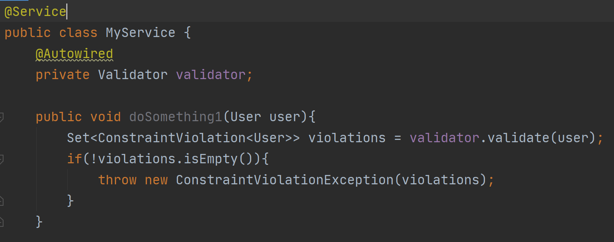
如果你引入了spring-boot-starter-validation这个起步依赖，那么Spring会为你自动预配置一个Validator的bean，你只需要注入到你想要的地方用就可以了。
上图中，使用Validator的validate方法可以校验User类，User类定义的结构如下，有两个JSR-303的校验注解和一个自定义校验注解。
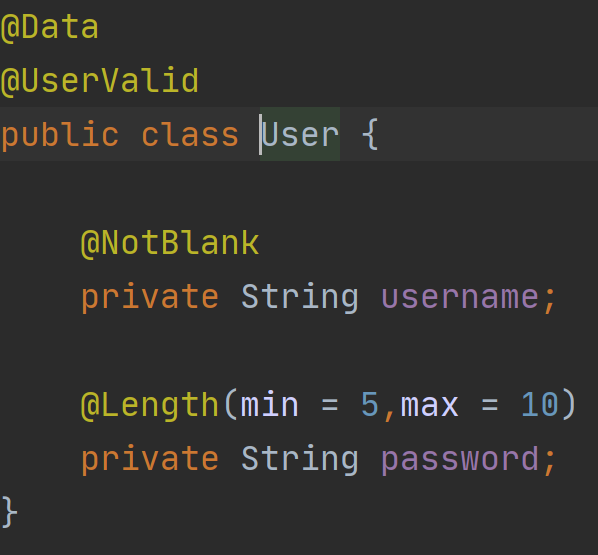
可以看到，方法的返回值是一个Set<ConstraintViolation<User>>，即校验出的所有不规范的字段，我们可以自由处理这些信息，比如可以像下面这样。
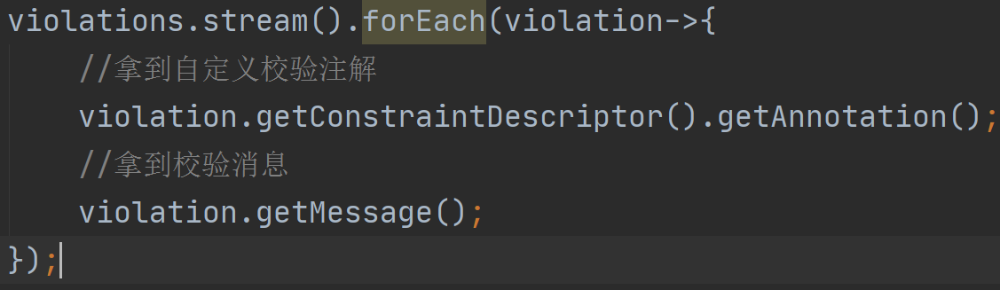
还有其他更多的ConstraintViolation的用法，这里不展开说。实际上最常见的做法就是像第一张图里那样，用Set构造一个ConstraintViolationException抛出。
分组校验
假设我们的User类有一个Id属性，它对应的是User表的主键。用过JPA或者Hibernate的朋友应该知道，插入数据时，我们一般指定自己需要的属性，但不主动指定Id这个字段，因为我们想要让JPA/Hibernate自己生成主键；而更新数据时，一般是先从数据库里查出一条记录，在Entity对象上set过属性后，再save进数据库，这个过程中，id由于之前被插进去，所以不是null。
假设现在我想要在插入的方法上进行校验，要求User的id为null，而在更新的方法上进行校验时，id不能为null，要实现这个需求，使用分组校验正合适。
定义分组标志
首先定义两个空接口OnUpdate和OnInsert，它们不用有任何方法，实际上我们只是拿它们作为一个分组标识。
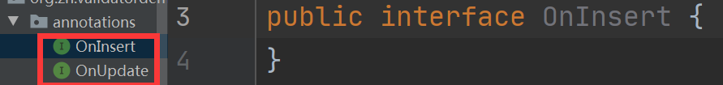
User类定义如下，可以看到对于id属性，指定了NotNull和Null，而且指定了groups属性，如此一来，两个校验注解就不会同时生效，只有当OnUpdate的时候，NotNull会生效，只有当OnInsert的时候，Null会生效。
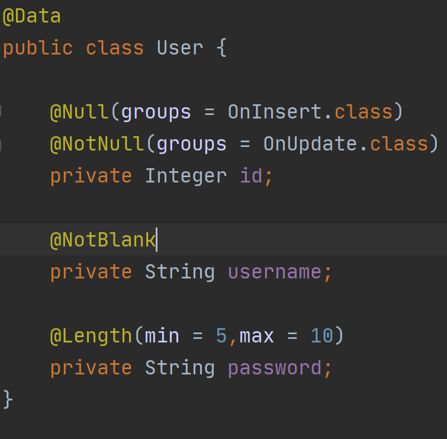
指定方法所使用的分组
那么如何决定何时启用OnUpdate和OnInsert呢？也许你已经注意到了，Spring提供的Vlidated注解是可以用在方法上的，但实际上Validated用在方法上必须配合分组的接口，比如下面这个例子。
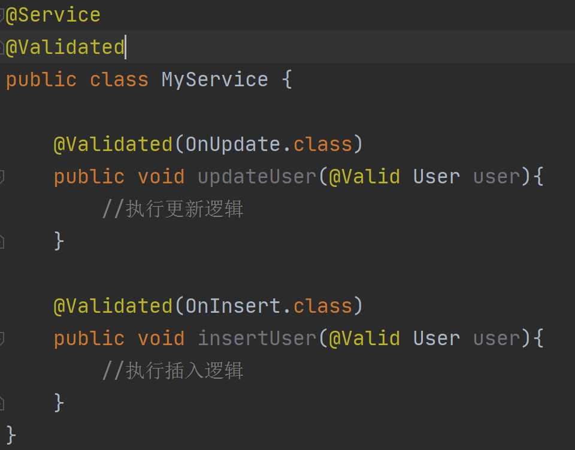
假设我们在Service层使用校验，在Service类上先加上Validated注解，如此一来，MyService中的所有方法都具有了数据校验的能力；其次在方法上指定Validated注解，我们希望对于updateUser方法指定的是OnUpdate的情景，对insertUser方法指定的是OnInsert的情景，在方法的User入参上使用Valid注解，只有这样，才会在方法调用时进行校验。
自定义校验注解中的groups属性
前一篇文章讲过如何使用自定义校验注解，来执行我们自己的校验逻辑，比如下面这个校验注解。
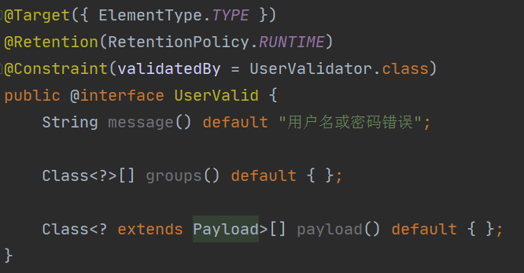
可以看到其中有一个groups属性，这个groups属性其实就跟我们上面使用的groups属性作用完全一致，NotNull、NotEmpty、NotBlank这些注解也统统都包含了groups属性，所以，如果我们想要对一个自定义校验注解进行分组校验，那么标注在校验处时使用groups属性即可，比如下面这个例子。
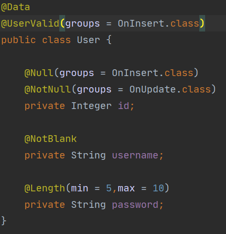
自定义异常处理
虽然我们可以指定一个字段校验不通过时所输出的message，但实际上，默认的异常处理相当粗糙，放一张图感受一下。
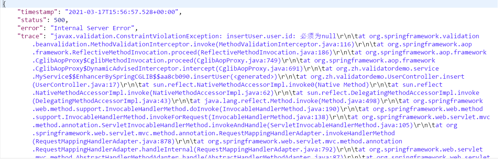
我们其实并不需要过于完整的报错信息，只是想看到哪个字段违反了哪个校验规则，所以这个信息只能自己处理了。
两种校验异常
此外，之前一篇文章曾经提过SpringValidation相关的两个异常，MethodArgumentNotValidException和ConstraintViolationException，前者是在Controller层校验失败时抛出的异常，并且报的是http 400的Bad Request，后者则是在非Controller层校验失败时抛出的异常，报的是http 500的Internal Server Error，这个两个异常其实有必要进行统一处理。
那么需求就明确了，我们希望返回给前端的是简单的校验结果，即字段名和message的组合，同时又希望统一处理两种异常，返回http 400 BadRequest错误。
自定义校验结果返回数据
按照需求，我们可以写一个建议的自定义校验结果类，ValidationResult里包含一个ValidationError列表，列表中的每个元素都包含一个字段和其校验失败的message，最终我们将会把这个类作为json数据返回给前端。
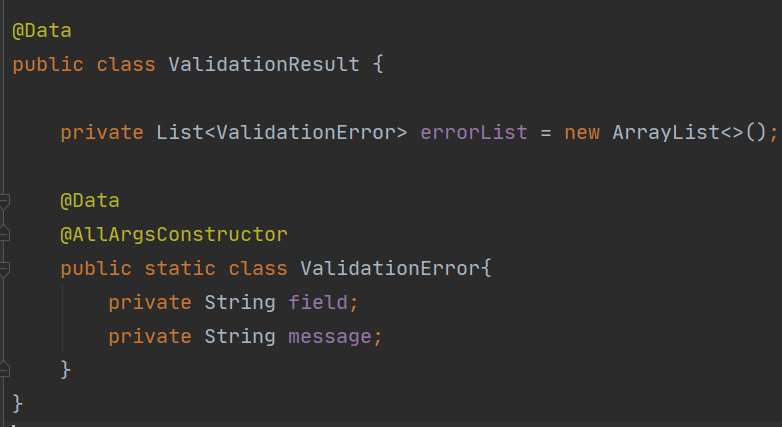
全局异常处理
定义一个类并用ControllerAdive标注，如此一来，里面的异常处理方法就会对所有的Controller生效；用ExceptionHandler来标注异常处理的方法，指定要处理哪种异常；ResponseStatus用来指定返回给前端的是哪种http响应码，ResponseBody用来将返回值转换为json数据响应给前端，一般来说，只要你的项目中引入了spring-boot-starter-web，就会包含jackson的包，使用ResponseBody就能自动将Controller返回值转换为json格式。
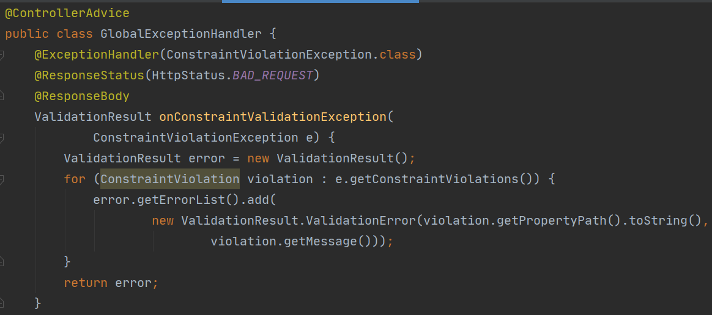
注意还需要处理MethodArgumentNotValidException。
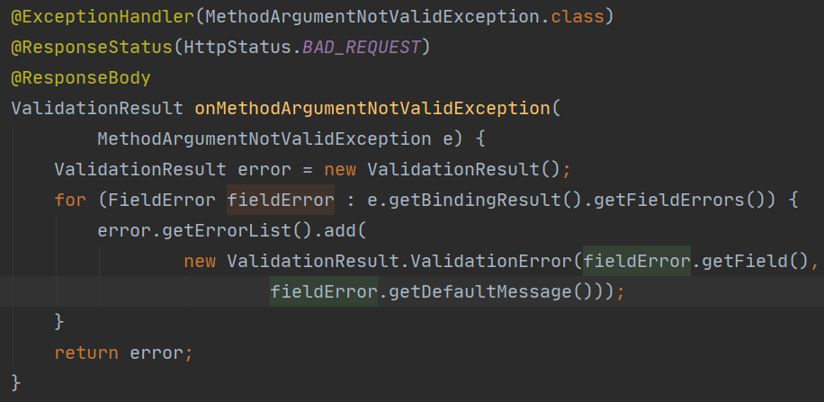
这次再违反一次数据校验规则，来看看返回的结果，格式清爽了不少，而且清一色的都是返回http 400 BadRequest。
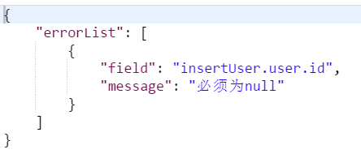